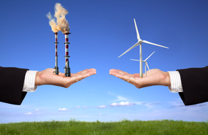
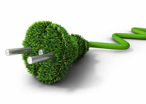

Mikä ihmeen tuulivoima?
Tuulivoima on tuulen liike-energian muuntamista sähköksi, yleensä tuuliturbiinien pyörivien lapojen välityksellä.

Miksi tuulivoimaa?
Tuulivoima on puhdas energian lähde. Tuulivoimalat ei saastuta ilmaa voimaloiden tapaan, jotka saavat energiansa fossiilista polttoaineista, niin kuin hiilestä tai luonnonkaasuista.
Miten saan tuulivoimaa?
Ota yhteyttä minuun niin voin auttaa sinua googlaamisen kanssa.
